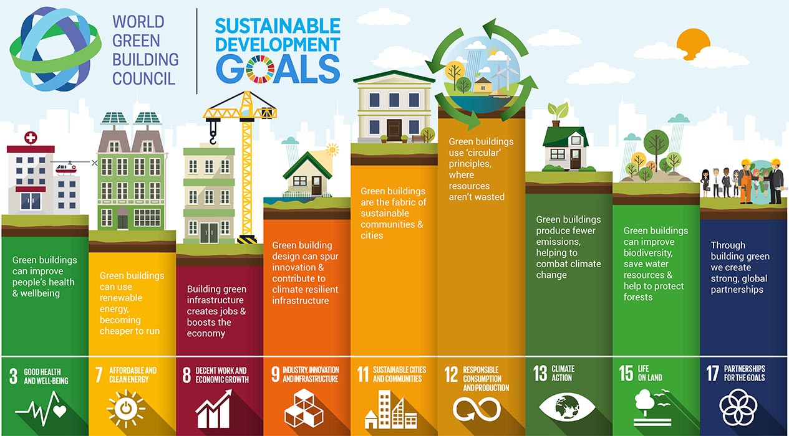

Sustainable Development and Green Economy

Sustainable development is an organizing principle for meeting human development goals while also sustaining the ability of natural systems to provide the natural resources and ecosystem services on which the economy and society depend.
A green economy is an economy that aims at reducing environmental risks and ecological scarcities, and that aims for sustainable development without degrading the environment. It is closely related with ecological economics, but has a more politically applied focus.
The green economy is an important tool for sustainable development; one that is inclusive and can drive economic growth, employment, and poverty eradication, whilst maintaining the healthy functioning of the Earth’s ecosystems. Importantly, the outcome document also recognises that capacity building, information exchange and experience sharing will be critical for implementing green economy policies.